论文成果
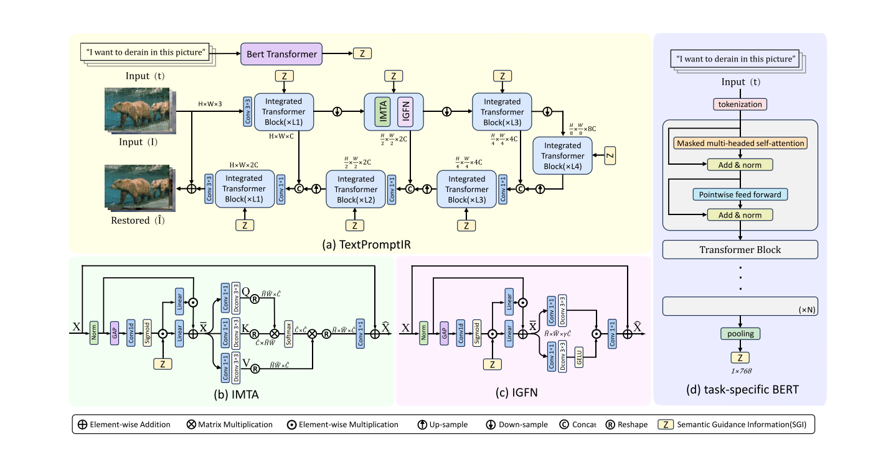
Textual Prompt Guided Image Restoration
Qiuhai Yan, Kang Chen, Aiwen Jiang, Long Peng, Qiaosi Yi, Chunjie Zhang
https://arxiv.org/abs/2312.06162
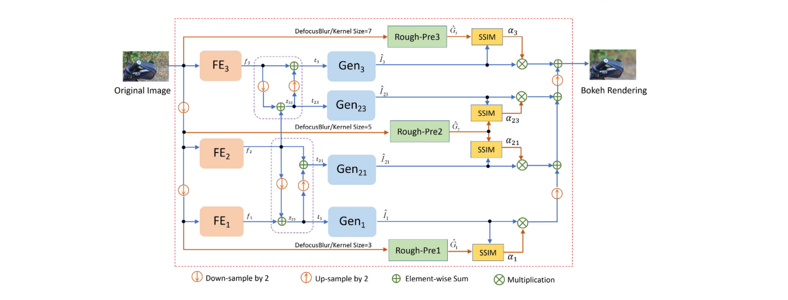
Self-supervised multi-scale pyramid fusion networks for realistic bokeh effect rendering
Zhifeng Wang, Aiwen Jiang, Chunjie zhang, Hanxi LI, Bo Liu
https://www.sciencedirect.com/science/article/abs/pii/S1047320322001110
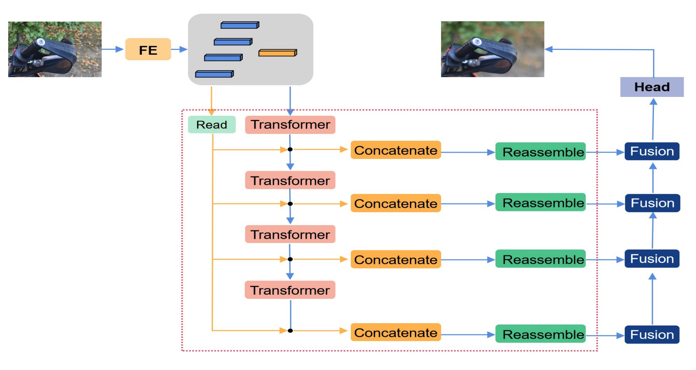
A Dense Prediction ViT Network for Single Image Bokeh Rendering
Zhifeng Wang, Aiwen Jiang
https://link.springer.com/chapter/10.1007/978-3-031-18916-6_18
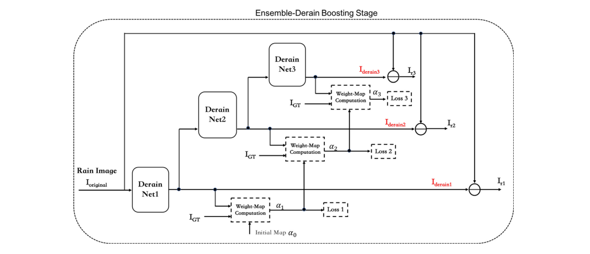
Ensemble single image deraining network via progressive structural boosting constraints
Long Peng, Aiwen Jiang, Haoran Wei, Bo Liu, Mingwen Wang
https://www.sciencedirect.com/science/article/abs/pii/S0923596521002204
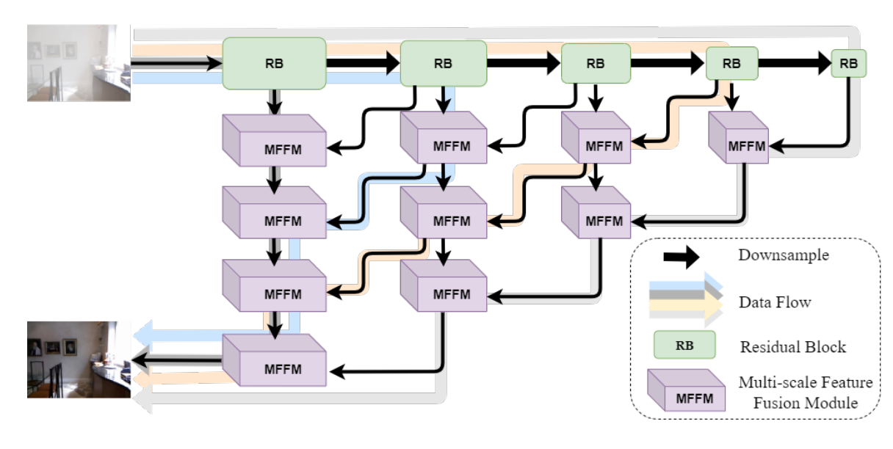
Efficient and accurate multi-scale topological network for single image dehazing
Qiaosi Yi, Juncheng Li, Faming Fang, Aiwen Jiang, Guixu Zhang
https://ieeexplore.ieee.org/abstract/document/9473023
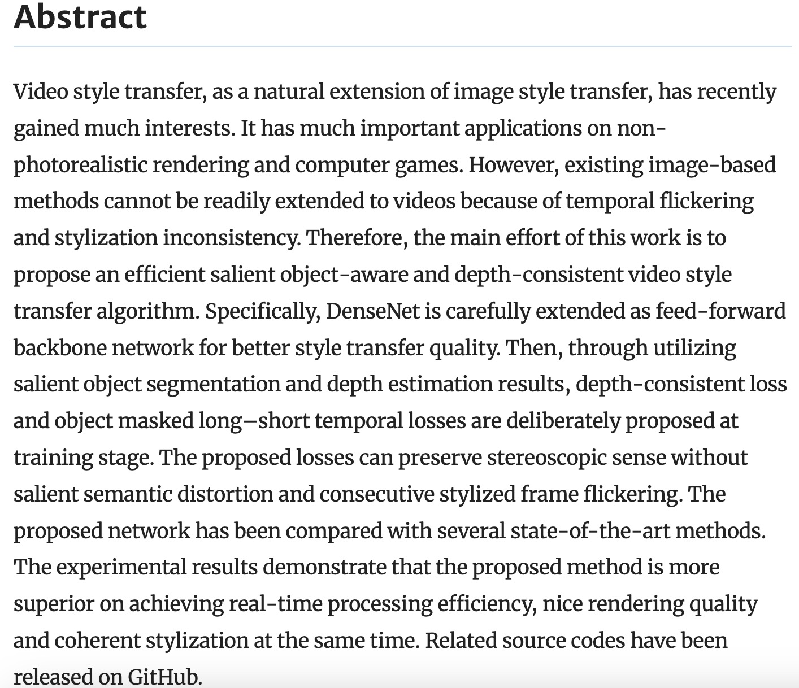
Deliberation on object-aware video style transfer network with long–short temporal and depth-consistent constraints
Yunxin Liu, Aiwen Jiang, Jiancheng Pan, Jianming Liu, Jihua Ye
https://link.springer.com/article/10.1007/s00521-020-05630-y
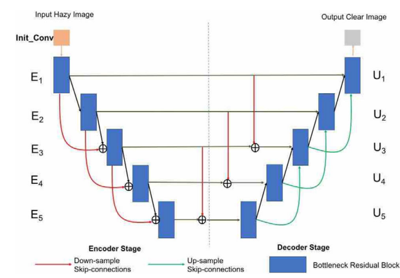
MSNet: A novel end‐to‐end single image dehazing network with multiple inter‐scale dense skip‐connections
Qiaosi Yi, Aiwen Jiang, Xiaolin Deng, Changhong Liu
https://ietresearch.onlinelibrary.wiley.com/doi/full/10.1049/ipr2.12013
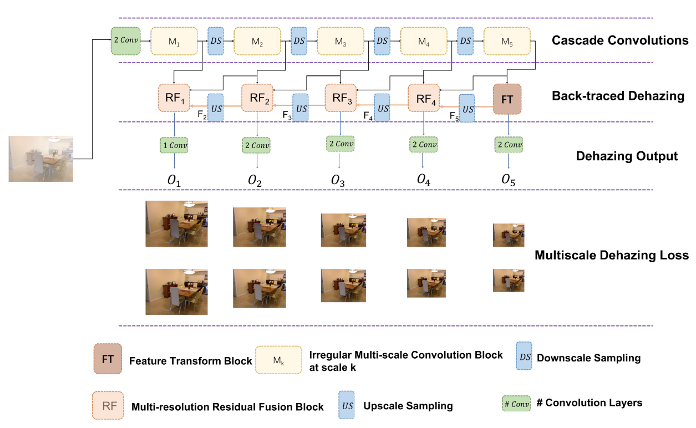
Progressive back-traced dehazing network based on multi-resolution recurrent reconstruction
Qiaosi Yi, Aiwen Jiang, Juncheng Li, Jianyi Wan, Mingwen Wang
https://ieeexplore.ieee.org/abstract/document/9039631
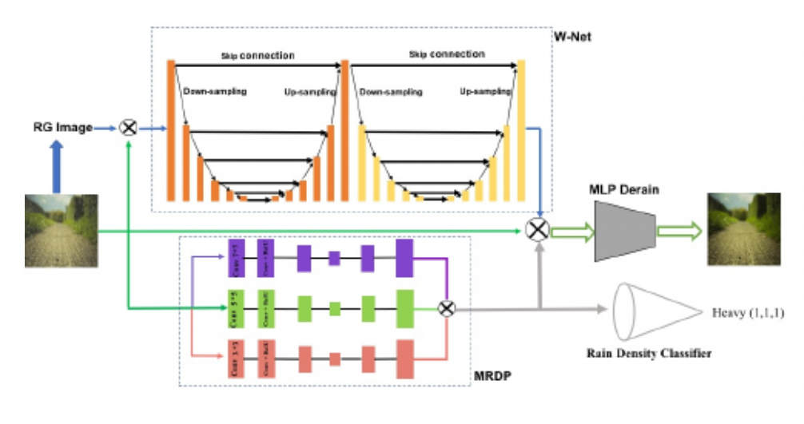
Cumulative rain density sensing network for single image derain
Long Peng, Aiwen Jiang, Qiaosi Yi, Mingwen Wang
https://ieeexplore.ieee.org/abstract/document/9001158
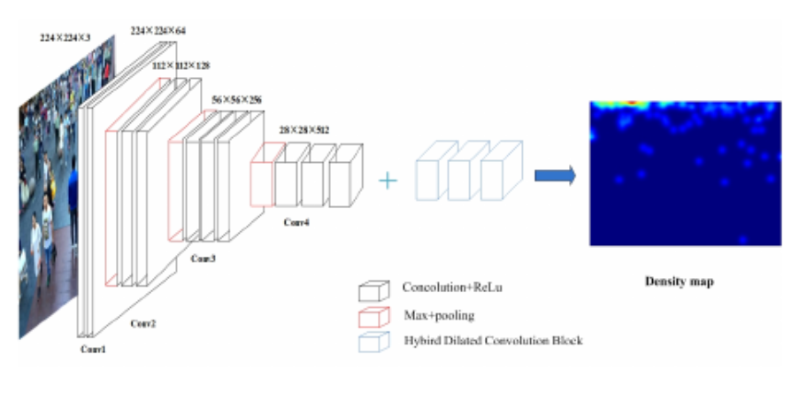
Static Crowd Scene Analysis via Deep Network with Multi-branch Dilated Convolution Blocks
Haoran Liu, Aiwen Jiang, Qiaosi Yi, Xiaolin Deng, Jianyi Wan, Mingwen Wang
https://ieeexplore.ieee.org/abstract/document/8851704
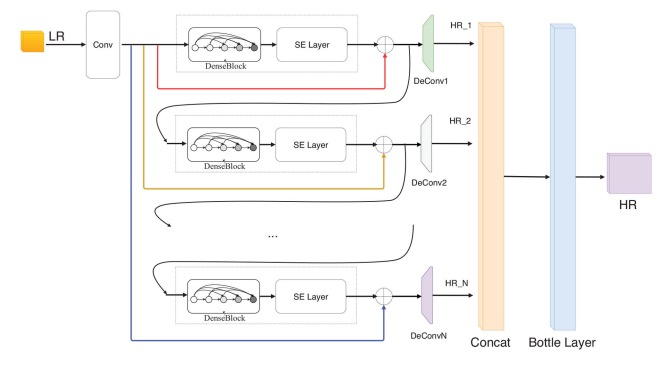
Deep residual refining based pseudo‐multi‐frame network for effective single image super‐resolution
Kangfu Mei, Aiwen Jiang, Juncheng Li, Bo Liu, Jihua Ye, Mingwen Wang
https://ietresearch.onlinelibrary.wiley.com/doi/full/10.1049/iet-ipr.2018.6057
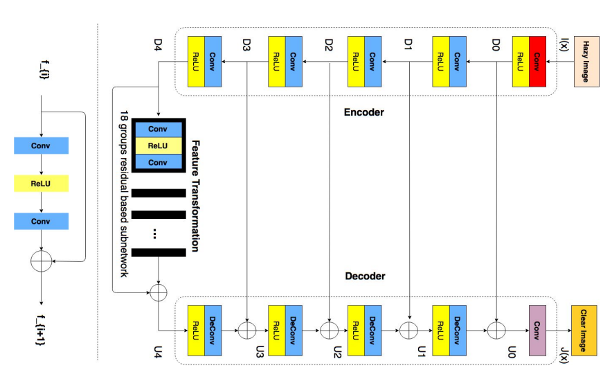
Progressive feature fusion network for realistic image dehazing
Kangfu Mei, Aiwen Jiang, Juncheng Li, Mingwen Wang
https://link.springer.com/chapter/10.1007/978-3-030-20887-5_13